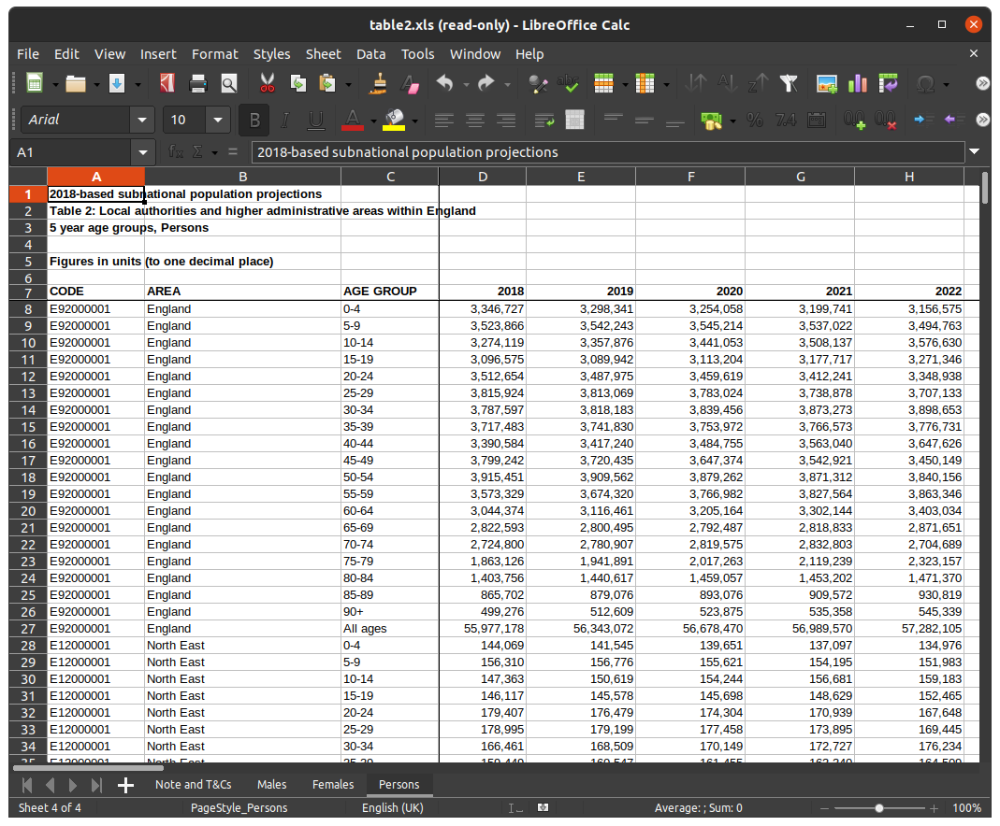

How Not to Supply Data¶
If you provide packaged, versioned, well-documented software as part of your academic output, then you make your work much more easily reproducible (see my previous post). However, if that software needs some input data to do its thing, then you also need to apply the same principles to the data: somebody with a different dataset wont be able to produce your results, despite having identical software.
Step 1 is to you cite all your data sources, but often the raw data will need some form of preprocessing to be useful. And how often is this transparent? You download a spreadsheet, copy and paste some data into a new spreadsheet, apply some formulas, change some names, then save it as a csv file. This is completely opaque and if any misinterpretations or errors creep in then they are hidden.
In an ideal world data providers would provide their data in directly usable formats, but how can they anticipate all the possible needs of their consumers? Realistically, some preprocessing will be required
Too often data providers conflate visualisation (i.e. presentation to human viewers) and the data itself, which makes the data harder to extract programatically.
Too often data providers supply data in proprietary formats...
Example 1: Population data¶
Say we need population projections by for England by local authority, sex and (5-year) age group. We'd like it in some non-proprietary format that we could load straight into (e.g.) python or R and do something with it. A csv file will do just fine for this.
ONS produce this data, and here's the 2018 numbers from their website. It's an Excel spreadsheet:

The obvious question that springs to mind is: what audience is this aimed at? It's got all sorts of features like frozen rows, formatted text, comma-number separators than suggest it's been designed for humans to pore over. Really? But who gets insight directly from huge tables of numbers, surely they'd visualise it graphically in some way? It seems to be in some no-man's land between user-friendliness and process-friendliness.
To get the exact dataset I want I could do the following:
- delete the first six rows of the Males worksheet
- delete all the rows where the AGE GROUP column value is "All ages", otherwise I'll double-count the numbers
- delete all the rows where the AREA column value is a country, a region or a county, to avoid more double-counting
- create a new column called SEX and fill it with (e.g.) "M"
- remove the comma-separator formatting from the numbers and the "freeze columns" setting
- copy the remaining contents into a new worksheet
- repeat all the steps above in the Females worksheet, but adding (e.g.) "F" in the new SEX column
- copy this to the new sheet, below the male data
- save the new worksheet as a csv file
As data goes, this isn't particularly messy or unstructured, yet I have to go though some fairly tedious, manual and error-prone steps to get the data exactly as I need it. And if I'm using this data to generate some published results, do I really want people to have to repeat these steps to replicate my work? I could detail the manual preprocessing steps in the text, but it detracts somewhat from the impact of the paper. Another possibility is I could publish the preprocessed data and reference it in my paper. But if it transpires there is an error in the original data, which gets corrected, then neither I, not my readers, get the correction.
Perhaps a better solution would be to automate the steps I took, and packages like pandas (for python) are perfect for this, although there's a few hoops to jump though:
import pandas as pd
import requests
# ONS spreadsheet
# 2018 SNPP 5y
url = "https://www.ons.gov.uk/file?uri=%2fpeoplepopulationandcommunity%2fpopulationandmigration%2fpopulationprojections%2fdatasets%2flocalauthoritiesinenglandtable2%2f2018based/table2.xls"
# reading url directly gives 403, have to use requests with an acceptable user-agent string
# data = pd.read_excel(url) # fails
# which requests (by default)
response = requests.get(url)
if response.status_code != 200:
print("%d error")
exit()
then we process the data
dataset = pd.DataFrame()
for tab in ["Persons"]: # ["Males", "Females"]:
data = pd.read_excel(response.content, sheet_name=tab, header=6)
# get totals for checking I filtered correctly
totals = data[(data["AGE GROUP"] == "All ages") & (data["CODE"] == "E92000001")].reset_index(drop=True)
# remove duplicate age counts
data = data[data["AGE GROUP"] != "All ages"]
# remove non-LAD counts
data = data[data["CODE"].str.match(r'^E0[6789]*')]
# get totals for each year
annual_sums = data.drop(["CODE", "AREA", "AGE GROUP"], axis=1).sum()
annual_totals = totals.drop(["CODE", "AREA", "AGE GROUP"], axis=1).iloc[0])
#assert annual_sums.equals(annual_totals)
#print(data.drop(["CODE", "AREA", "AGE GROUP"], axis=1).sum() - totals.drop(["CODE", "AREA", "AGE GROUP"], axis=1).iloc[0])
data["SEX"] = tab[0]
dataset = dataset.append(data)
print(dataset)
explain that this breaks if the URL becomes stale, so still not a perfect solution.
APIs
Nomisweb...
https://www.nomisweb.co.uk/api/v01/dataset/NM_31_1.data.tsv?geography=1811939329...1811939332,1811939334...1811939336,1811939338...1811939497,1811939499...1811939501,1811939503,1811939505...1811939507,1811939509...1811939517,1811939519,1811939520,1811939524...1811939570,1811939575...1811939599,1811939601...1811939628,1811939630...1811939634,1811939636...1811939647,1811939649,1811939655...1811939664,1811939667...1811939680,1811939682,1811939683,1811939685,1811939687...1811939704,1811939707,1811939708,1811939710,1811939712...1811939717,1811939719,1811939720,1811939722...1811939730,1811939757...1811939767&date=latestMINUS1&sex=5,6&age=1...19&measures=20100
Schemas
DOIs for data
https://dataingovernment.blog.gov.uk/2020/11/10/we-want-your-feedback-on-using-the-doi-standard-in-government/
Still relying on supplier not to change data/format. At least you can say it not your fault